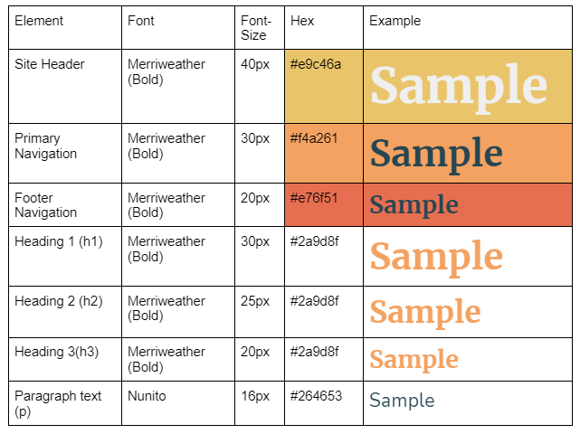

Typography
The fonts I have chosen are very simple and do not distract. I decided to use one serif font and one sans-serif font. The serif's (Merriweather Bold) will be used through all headings and headers while the primary paragraph font will be a sans-serif font (Nunito).
